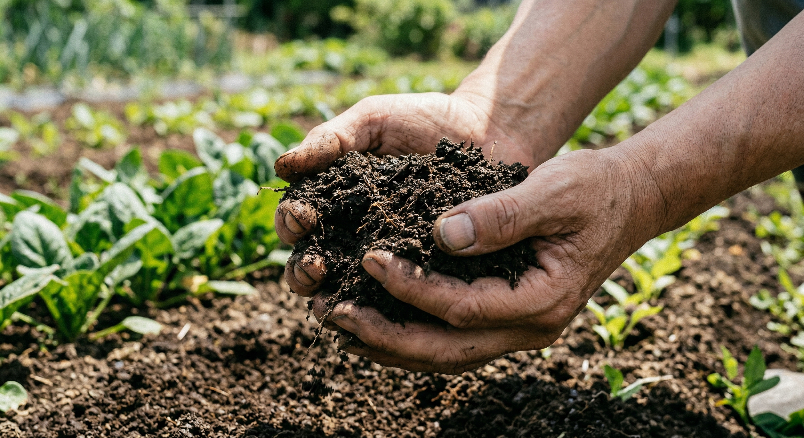

Scroll
Japan's Alcohol Platform
日本の酒文化を、一つの場所に。
Terroir（テロワール）とは、フランス語で「土地」を意味する言葉。同じ米でも、水が違えば味が変わる。気候が違えば、熟成が変わる。その場所でしか生まれない味わいを、テロワールと呼びます。
新潟の雪解け水で仕込む日本酒、鹿児島のシラス台地が育む芋焼酎、北海道の冷涼な空気が磨くウイスキー。すべての蔵元・蒸留所には、その土地だけのテロワールがあります。
Terroir HUBは、その一つ一つを集めた場所（HUB）です。

全国47都道府県にわたる1,750以上の生産者の公式情報を、一つ一つ丁寧に収集し、構造化したデータベース。口コミやレビューではなく、蔵元・蒸留所が自ら発信する情報だけを届けます。
AIコンシェルジュ「サクラ」が、24時間・多言語で対応。好み・料理・予算・シーンを伝えるだけで、日本酒・焼酎・ウイスキー・リキュールの中から、あなたにぴったりの一本を提案します。
カテゴリ
AI Concierge
日本酒1,295蔵、焼酎389蒸留所、ウイスキー67蒸留所、リキュール — すべてのジャンルの公式データを学んだAIコンシェルジュです。
好み・料理・予算・シーンを伝えるだけで、ジャンルを横断してあなたにぴったりの一本を提案。
24時間対応、どの言語からの質問にもお答えします。
Why Terroir HUB
日本酒・ウイスキー・焼酎・リキュールを一つのプラットフォームで — 公式データ、AI検索、多言語対応を兼ね備えたサービスは他にありません。
蔵元・蒸留所が公開している公式情報を丁寧に収集・構造化。口コミや二次情報ではなく、作り手自身の言葉をそのまま届けます。
AIサクラはあらゆる言語に対応。日本語、英語、フランス語、中国語、韓国語 — あなたの言葉で質問するだけで、自然な案内が返ってきます。
日本酒、焼酎、ウイスキー、リキュール — 4ジャンルをひとつの場所で。日本の酒文化をまるごと体験できます。
検索ではなく、会話で見つける。好み、料理、シーンを伝えるだけで、サクラがあなたにぴったりの一本を提案します。
地域・都道府県から蔵元や蒸留所を探せます。旅行計画にも最適。訪問できる蔵も見つかります。
すべての蔵元・蒸留所データは無料で閲覧可能。アカウント登録なしで、すぐに使えます。